Everybody knows about white Gaussian noise
White Gaussian noise is famous because it has very nice properties:
It is easy to generate using pseudorandom numbers
Each pixel is an independent, identically distributed Normal variable
The discrete Fourier, Hartley and Cosine transforms are also white Gaussian noise (except for the obvious symmetries)
In particular, the power spectrum is mostly flat
Applying a linear filter renders the pixel values non-independent, but they are still Normal and identically distributed.
Some properties of dubious convenience:
The mean is zero, thus it cannot be directly represented as a positive-valued image
Worse, the pixel values are not bounded, thus it has a-priori infinite dynamic range.
When you see it from far away (zooming-out), it disappears.
Statistics of white gaussian noise and its DFT:
| 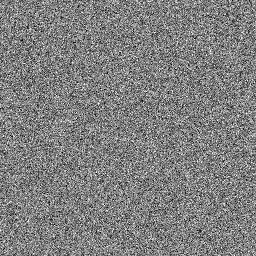 | 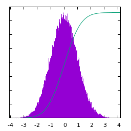 | 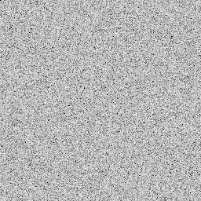 | 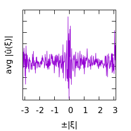 |
| \(u(x)\) | histogram of \(u\) | \(\log|\hat u(\xi)|\) | average spectral profile |
White gaussian noise blurred by a small gaussian kernel:
| 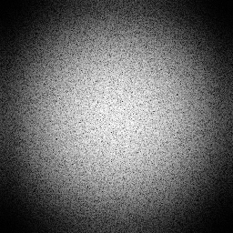 | 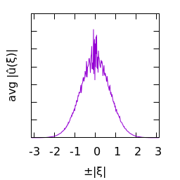 | ||
| \(u(x)\) | histogram of \(u\) | \(\log|\hat u(\xi)|\) | average spectral profile |
White gaussian noise blurred by a larger gaussian kernel:
| 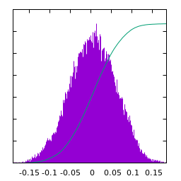 | 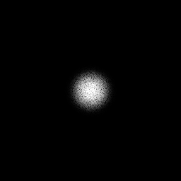 | ||
| \(u(x)\) | histogram of \(u\) | \(\log|\hat u(\xi)|\) | average spectral profile |
White gaussian noise blurred by a Cauchy kernel:
| 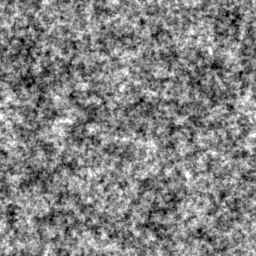 | 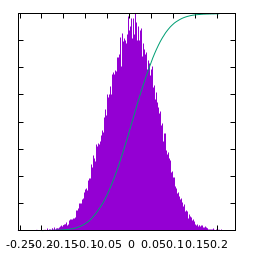 | 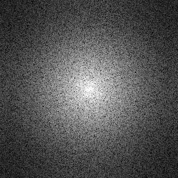 |  |
| \(u(x)\) | histogram of \(u\) | \(\log|\hat u(\xi)|\) | average spectral profile |
White gaussian noise blurred by a Laplace kernel:
| 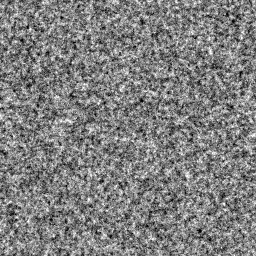 | 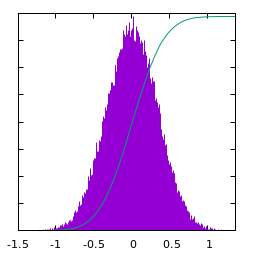 | 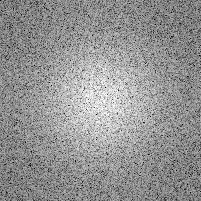 | 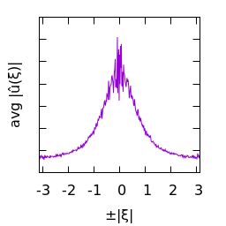 |
| \(u(x)\) | histogram of \(u\) | \(\log|\hat u(\xi)|\) | average spectral profile |
White gaussian noise blurred by a Disk kernel:
| 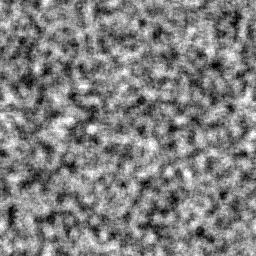 | 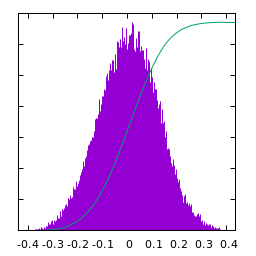 | 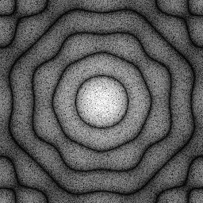 | 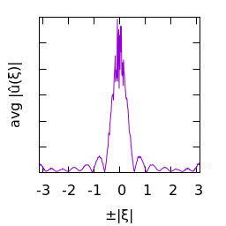 |
| \(u(x)\) | histogram of \(u\) | \(\log|\hat u(\xi)|\) | average spectral profile |
White gaussian noise blurred by a Square kernel:
| 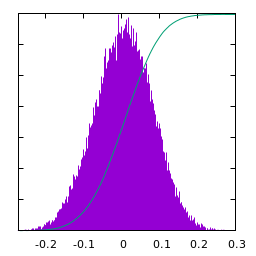 | 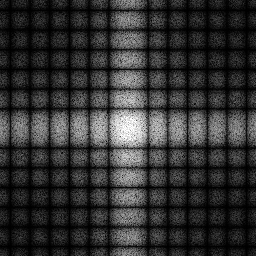 | 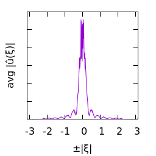 | |
| \(u(x)\) | histogram of \(u\) | \(\log|\hat u(\xi)|\) | average spectral profile |
When the spectrum of noise decays as a power-law, we say that it is “colored” noise. The exponent \(\alpha\) of the power law determines its color. The particular case of \(\alpha=0\) corresponds to white noise (a flat spectrum).
| 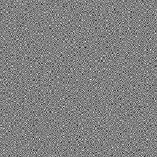 | 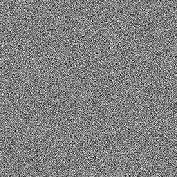 | |
| \(\alpha=2\) purple | \(\alpha=1\) blue | \(\alpha=0\) white |
| \(\phantom{a}\) | ||
| 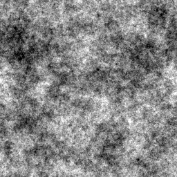 | 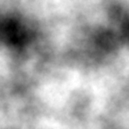 | 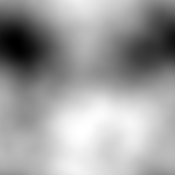 |
| \(\alpha=-1\) pink | \(\alpha=-2\) brown | \(\alpha=-3\) smooth |
Statistics of Pink noise (\(\alpha=-1\)):
| 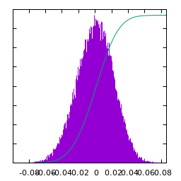 | 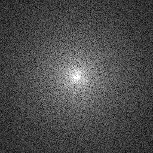 | 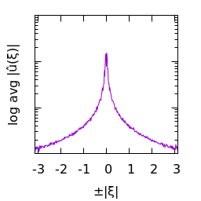 | |
| \(u(x)\) | histogram of \(u\) | \(\log|\hat u(\xi)|\) | average spectral profile |
Statistics of Brown noise (\(\alpha=-2\)):
| 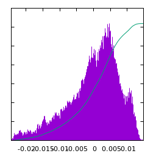 | 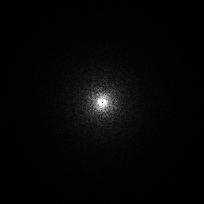 | 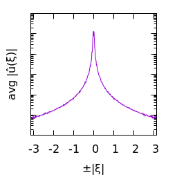 | |
| \(u(x)\) | histogram of \(u\) | \(\log|\hat u(\xi)|\) | average spectral profile |
Statistics of Smooth noise (\(\alpha=-3\)):
| 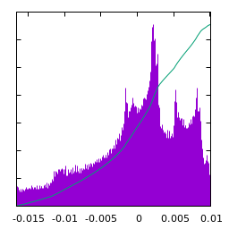 | 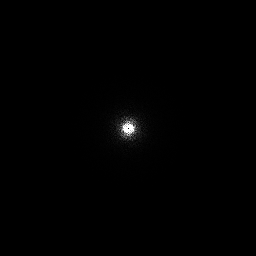 | 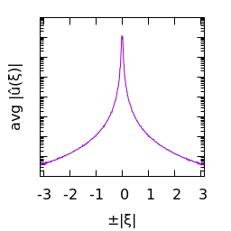 | |
| \(u(x)\) | histogram of \(u\) | \(\log|\hat u(\xi)|\) | average spectral profile |
Statistics of Blue noise (\(\alpha=1\)):
| 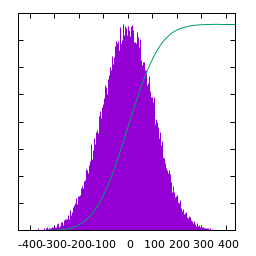 | 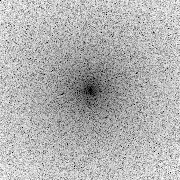 | 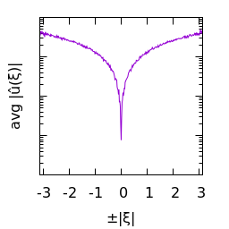 | |
| \(u(x)\) | histogram of \(u\) | \(\log|\hat u(\xi)|\) | average spectral profile |
Statistics of Purple noise (\(\alpha=2\)):
| 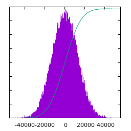 |  |
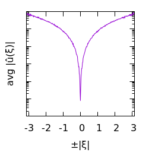 | |
| \(u(x)\) | histogram of \(u\) | \(\log|\hat u(\xi)|\) | average spectral profile |